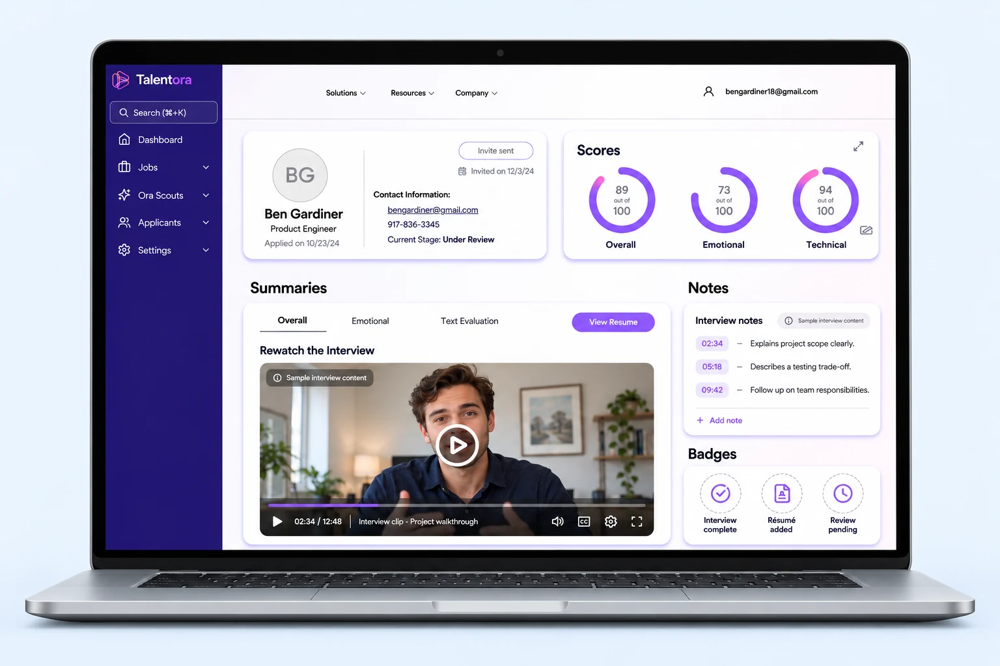
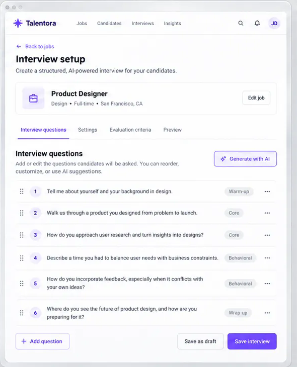

TALENTORA / PRODUCT DESIGN · RESEARCH · BRANDING
AI Interview App
A recruiter and candidate experience exploring onboarding, interview preparation, and a shared visual identity.
- Role
- Lead UX Designer
- Years
- 2025–2026
- Scope
- UX research, UI/UX design, branding

- My contribution
- UX research, interface design, user flows, and brand identity
- Collaboration
- Six-person team spanning design, technology, and business
- Scope shown here
- Design exploration and MVP planning; measured hiring outcomes are not established in this case study
The challenge: efficiency without losing context
Talentora explored conversational AI for early-stage hiring at small and mid-sized companies. The design challenge was to help busy recruiters organize screening while giving candidates a clear way to prepare for an unfamiliar interview format.
My work connected user research, candidate and recruiter flows, interface design, and branding. The product was a team effort; the engineering implementation and hiring outcomes should be evaluated separately from the design work shown here.
What the research brought into focus
I interviewed small-business employers and active job seekers and explored competing products. The existing research synthesis identifies three concerns: repetitive screening work, limited context beyond résumés, and uncertainty about impersonal or opaque AI evaluation.
These themes framed the design questions. They do not establish that an AI interview is more accurate or fair than another screening method.
RECRUITER PERSONA
Jordan Miller
HR Manager · Small tech startup
Personality
Efficient · Empathetic · Tech-savvy
Analytical · Solution-oriented
Expectations & goals
- Screen candidates quickly and fairly
- Reduce repetitive interview tasks
- Understand soft skills and cultural fit
- Maintain a positive candidate experience
- Lower hiring costs and time-to-fill
- Trust insights without sacrificing transparency
Narrative
Jordan manages hiring at a growing tech startup and wears multiple hats. They want to connect talented people with the right roles, but finds screening applicants time-consuming. They look for tools that save time, improve candidate fit, and still feel human and fair.
Explore the supporting research artifacts


Three decisions that shaped the experience
01 / Separate recruiter and candidate journeys
The two roles have different tasks. The proposed flows separate candidate preparation from recruiter setup and applicant review, so each journey can focus on the information needed for that role.
02 / Put preparation before the interview
The candidate flow includes microphone configuration, practice questions, and permissions before the interview. These steps make preparation explicit. The trade-off is a longer setup sequence; testing should establish whether the extra steps improve readiness or create drop-off.
03 / Connect the brand to onboarding
I developed logo variations, spacing guidelines, and a color palette, then applied the identity to onboarding screens. This connects the marketing promise with the product experience. A consistent identity can support recognition, but visual polish alone does not establish trust in an AI evaluation.


Exploring the product experience
These illustrative concepts show how recruiters might review an interview, manage hiring activity, configure interviews, and help candidates prepare for an AI interview.




Follow the proposed workflows
These diagrams document the intended experience. They are design artifacts, not a recording of a verified live product.


View prioritization, ideation, and brand development


What I would validate next
The central tension is between reducing recruiter effort and preserving meaningful candidate context. Looking back at the proposed flow, emotion and sentiment analysis need particular scrutiny: a confident-looking summary should not be treated as evidence of job suitability.
A next iteration should make the source and limitations of AI-generated information visible and preserve human review. These are recommendations for further work, not claims that these safeguards were implemented or tested.
- Usability: Can recruiters configure an interview without help? Track completion, errors, and time on task.
- Candidate readiness: Do practice and permissions steps clarify what will happen? Observe comprehension and setup abandonment.
- Understanding: Can reviewers distinguish candidate evidence from AI interpretation? Test this before drawing conclusions about trust.
This case study presents the design work. It does not claim improved hiring quality, validated fairness, or a measured increase in user trust.